Aula prática 4b — manipulando dados em grade com xarray e Cartopy
Esta é a aula mais densa do Módulo 1. Após ter baixado MERGE (precipitação) e SAMeT (TMIN/TMAX) na Aula prática 4a — download das grades do CPTEC (MERGE e SAMeT), montamos um pipeline completo de análise de anomalias:
abrir NetCDF (SAMeT, climatologia) e GRIB2 (MERGE) com
xarray;plotar o dado observado em mapa com
cartopy;compreender a estrutura
dayofyearda climatologia (365 passos);alinhar grades diferentes (resolução, convenção de longitude);
calcular anomalias diárias (Observado − Climatologia);
acumular anomalias no mês;
extrair séries temporais em pontos de interesse e comparar observado × climatologia.
Objetivo
Dominar o conjunto mínimo de operações com xarray necessárias
para usar produtos de grade do CPTEC como insumo de plausibilidade
em análises de COPs.
Pré-requisitos
pip install xarray netcdf4 cfgrib cartopy eccodes
Configuração inicial
import xarray as xr
import numpy as np
import pandas as pd
import matplotlib.pyplot as plt
import cartopy.crs as ccrs
import cartopy.feature as cfeature
import glob
import calendar
import warnings
warnings.filterwarnings('ignore')
plt.rcParams.update({
'figure.dpi': 100,
'font.size': 11,
'axes.titlesize': 13,
'axes.labelsize': 11,
})
1. carregando a climatologia
A climatologia está armazenada em um arquivo por variável, com
365 passos temporais. A coordenada time usa datas de referência
no ano 2020, mas o que importa é a posição ordinal (dia 1, dia 2,
… dia 365).
Variável |
Arquivo |
Variável interna |
Grid |
|---|---|---|---|
Precipitação |
|
|
0,10° (551 × 691) |
Tmin |
|
|
0,05° (1001 × 1381) |
Tmax |
|
|
0,05° (1001 × 1381) |
ds_clima_prec = xr.open_dataset('gridded-data/climatology-precip.nc')
ds_clima_tmin = xr.open_dataset('gridded-data/climatology-tmin.nc')
ds_clima_tmax = xr.open_dataset('gridded-data/climatology-tmax.nc')
2. carregando dados observados
ds_prec = xr.open_dataset('gridded-data/merge/MERGE_CPTEC_20240115.grib2', engine='cfgrib')
ds_tmin = xr.open_dataset('gridded-data/tmin/SAMeT_CPTEC_TMIN_20240115.nc', engine='netcdf4')
ds_tmax = xr.open_dataset('gridded-data/tmax/SAMeT_CPTEC_TMAX_20240115.nc', engine='netcdf4')
Aviso
Atenção às convenções de nomes dos três produtos:
MERGE →
longitude/latitude, variávelrdp;SAMeT →
lon/lat, variáveistmin/tmax;Climatologia →
lon/lat, variáveispmed/ttmin/ttmax.
Misturar essas convenções sem renomeação é fonte clássica de bugs silenciosos.
3. visualização espacial com Cartopy
Dicas Cartopy
Há duas coisas separadas:
projection=noaxdefine como o mapa será visto.transform=no plot diz em que sistema estão os seus dados.
Para dados em lon/lat use sempre transform=ccrs.PlateCarree().
O projection do eixo pode ser PlateCarree, Mercator, Lambert,
etc. — independente de como os dados estão armazenados.
Precipitação MERGE/CPTEC (15/01/2024)
fig, ax = plt.subplots(figsize=(12, 10), subplot_kw={'projection': ccrs.PlateCarree()})
img = ax.contourf(
ds_prec.longitude, ds_prec.latitude, ds_prec.rdp.values,
origin='lower', levels=np.arange(0, 20, 0.2),
cmap='GnBu', extend='both', transform=ccrs.PlateCarree(),
)
ax.set_extent([-75, -30, -35, 6])
ax.add_feature(cfeature.COASTLINE, linewidth=0.5)
ax.add_feature(cfeature.BORDERS, linewidth=0.3)
ax.add_feature(cfeature.STATES, linewidth=0.2)
ax.gridlines(draw_labels=True, linewidth=0.3, alpha=0.5, linestyle='--')
plt.colorbar(img, ax=ax, shrink=0.7, label='mm/dia')
plt.show()
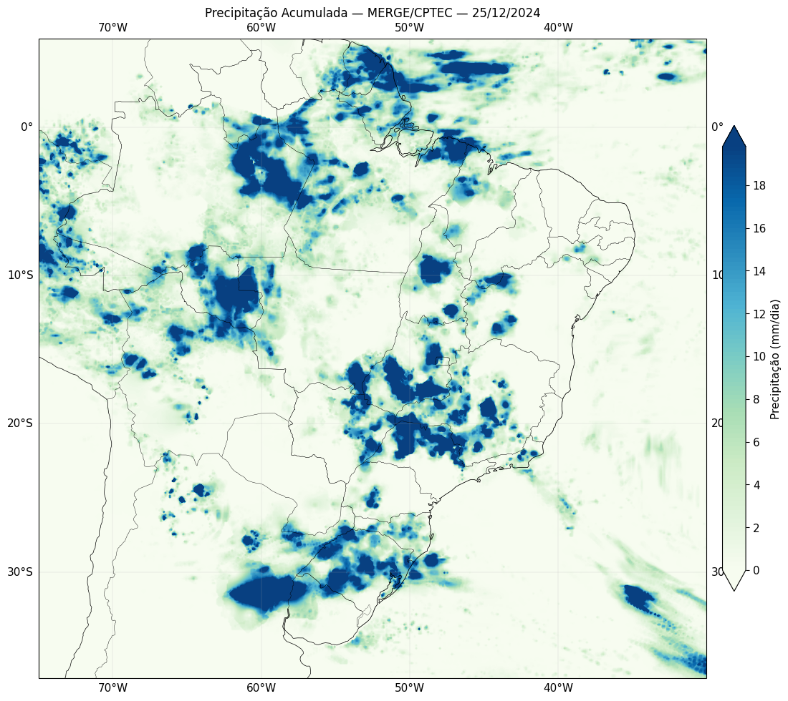
Figura 11 - Precipitação observada (MERGE/CPTEC) em 15/01/2024.
Temperatura mínima e máxima (SAMeT/CPTEC)
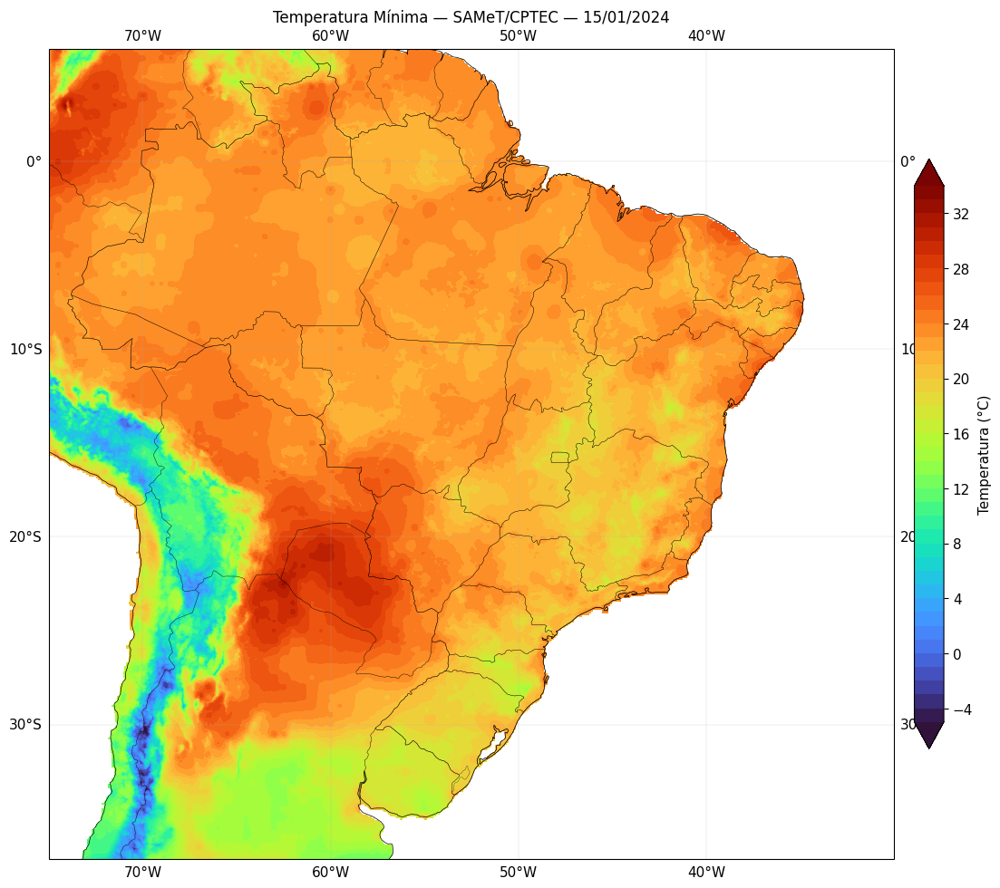
Figura 12 - Tmin observada (SAMeT/CPTEC) em 15/01/2024.
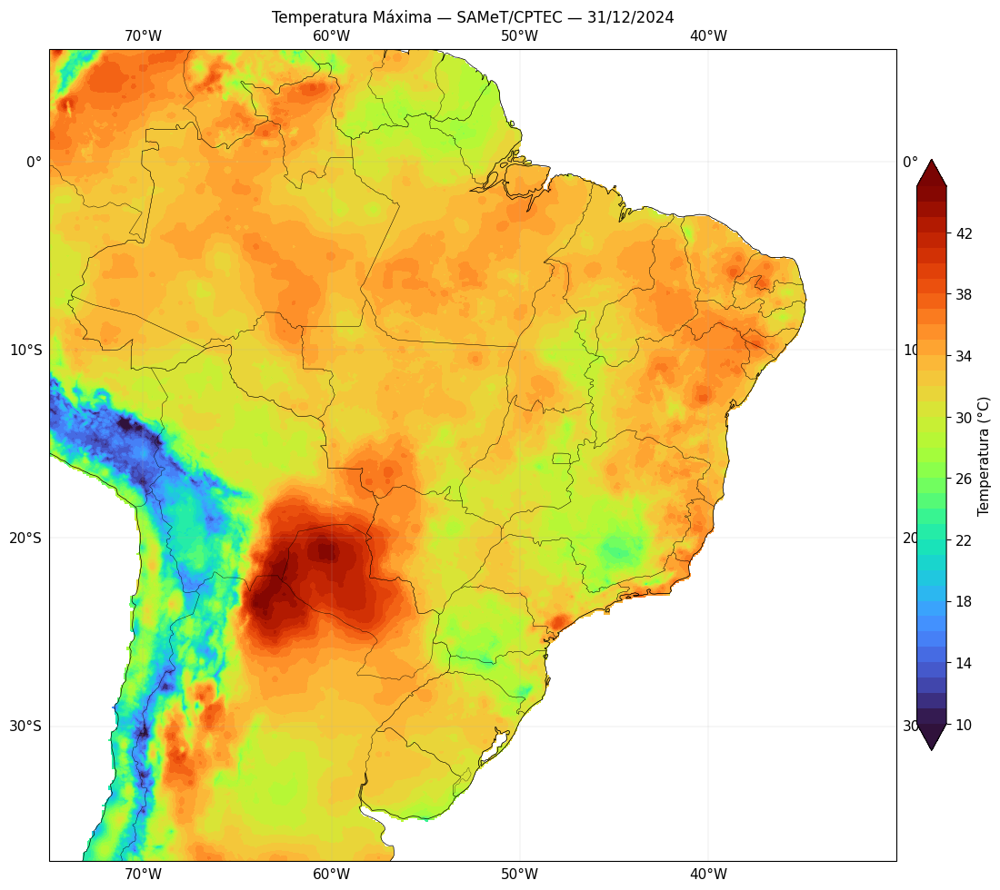
Figura 13 - Tmax observada (SAMeT/CPTEC) em 15/01/2024.
4. explorando a climatologia
for i in range(5):
t = pd.Timestamp(ds_clima_prec.time.values[i])
print(f' Índice {i:3d} → {t.strftime("%Y-%m-%d")} → dayofyear = {t.dayofyear}')
Mapa do dia 360 da climatologia (≈ 25/dez):
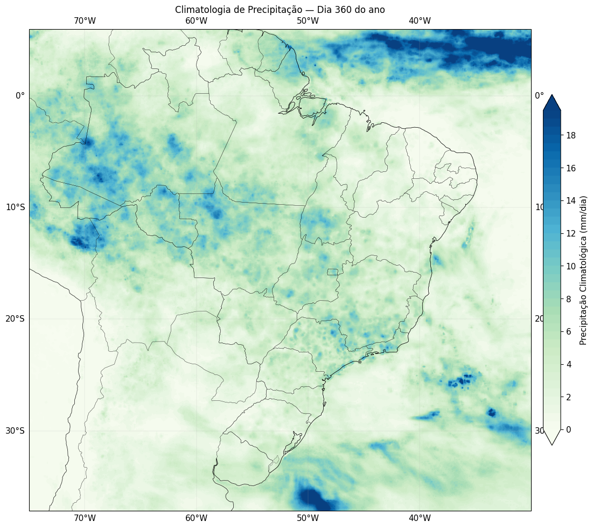
Figura 14 - Climatologia da precipitação para o dia 360 do ano (≈ 25/dez).
E o ciclo anual num ponto (Frederico Westphalen — RS):
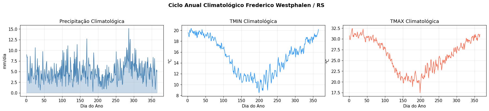
Figura 15 - Ciclo anual em Frederico Westphalen (RS) — média climatológica diária de precipitação, Tmin e Tmax.
5. cálculo de anomalias
Identificar o dayofyear
data_prec = pd.Timestamp(ds_prec.time.values); doy_prec = data_prec.dayofyear
data_tmin = pd.Timestamp(ds_tmin.time.values[0]); doy_tmin = data_tmin.dayofyear
data_tmax = pd.Timestamp(ds_tmax.time.values[0]); doy_tmax = data_tmax.dayofyear
Selecionar o dia certo da climatologia (com proteção para ano bissexto):
doy_p = min(doy_prec, ds_clima_prec.pmed.shape[0])
doy_n = min(doy_tmin, ds_clima_tmin.ttmin.shape[0])
doy_x = min(doy_tmax, ds_clima_tmax.ttmax.shape[0])
clima_prec_dia = ds_clima_prec.pmed .isel(time=doy_p - 1)
clima_tmin_dia = ds_clima_tmin.ttmin.isel(time=doy_n - 1)
clima_tmax_dia = ds_clima_tmax.ttmax.isel(time=doy_x - 1)
Alinhamento de grades (MERGE × climatologia)
obs_prec = ds_prec.rdp.squeeze()
# 1) longitude 0–360 → −180–180
obs_prec = obs_prec.assign_coords(longitude=(obs_prec.longitude + 180) % 360 - 180)
obs_prec = obs_prec.sortby('longitude')
# 2) renomear coordenadas para compatibilidade
obs_prec_aligned = obs_prec.rename({'longitude': 'lon', 'latitude': 'lat'})
# 3) ordenar lat/lon ascendente
obs_prec_aligned = obs_prec_aligned.sortby(['lat', 'lon'])
Quando as grades batem (SAMeT vs climatologia), a subtração é direta; quando não batem, interpolamos:
obs_tmin = ds_tmin.tmin[0].squeeze()
if obs_tmin.shape == clima_tmin_dia.shape:
anom_tmin = obs_tmin - clima_tmin_dia
else:
clima_tmin_interp = clima_tmin_dia.interp(
lat=obs_tmin.lat, lon=obs_tmin.lon, method='nearest',
)
anom_tmin = obs_tmin - clima_tmin_interp
Visualização das três anomalias num único painel
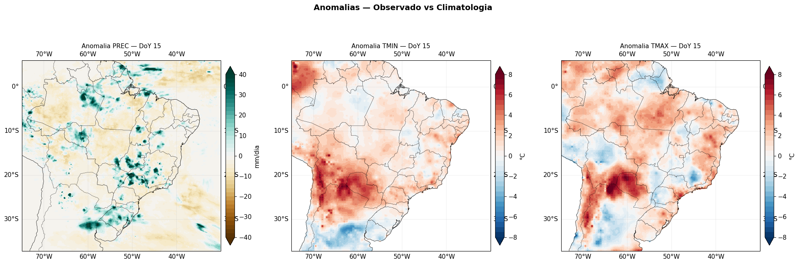
Figura 16 - Anomalias diárias de precipitação (BrBG), Tmin (RdBu_r) e Tmax (RdBu_r) em 15/01/2024.
6. acumulação de anomalias por período
A diferença entre anomalia média de um dia e anomalia acumulada do mês é a chave para detectar eventos prolongados (uma onda de calor ou um período de seca):
arquivos_tmin = sorted(glob.glob('gridded-data/tmin/SAMeT_CPTEC_TMIN_202412*.nc'))
anomalias = []
for arq in arquivos_tmin:
ds = xr.open_dataset(arq, engine='netcdf4')
doy = pd.Timestamp(ds.time.values[0]).dayofyear
if calendar.isleap(pd.Timestamp(ds.time.values[0]).year) and doy > 59:
doy -= 1
anom = ds.tmin[0] - ds_clima_tmin.ttmin.isel(time=doy - 1)
anomalias.append(anom.expand_dims(time=[ds.time.values[0]]))
anom_tmin_dez = xr.concat(anomalias, dim='time')
Anomalia média de dezembro:
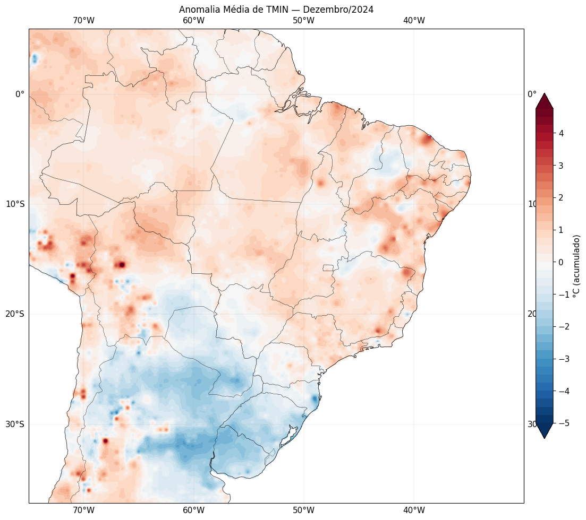
Figura 17 - Anomalia média de Tmin (°C) em dezembro/2024 (SAMeT − climatologia).
E comparação 1ª × 2ª quinzena:
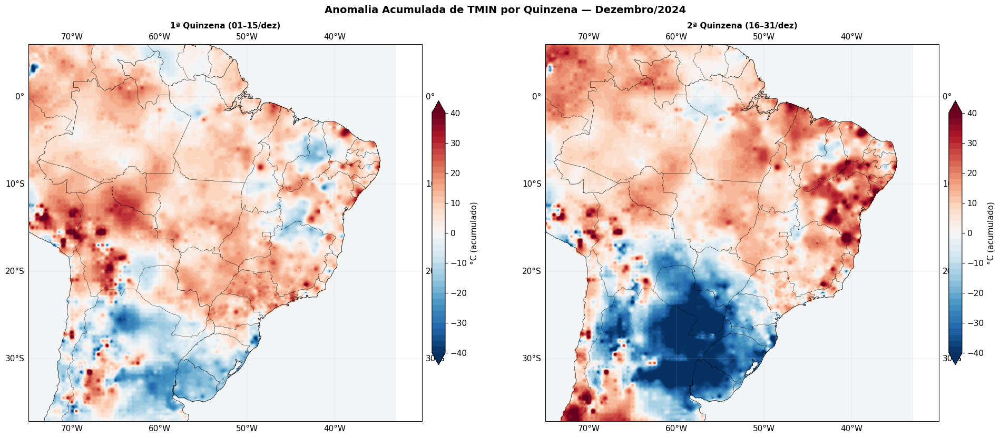
Figura 18 - Anomalias acumuladas por quinzena em dezembro/2024.
7. séries temporais em pontos de interesse
ds.sel(lat=…, lon=…, method='nearest') é o método central para
extrair uma série temporal de um produto de grade. Comparamos cinco
capitais:
pontos = {
'São Paulo/SP': {'lat': -23.55, 'lon': -46.63},
'Cuiabá/MT': {'lat': -15.60, 'lon': -56.10},
'Porto Alegre/RS': {'lat': -30.03, 'lon': -51.20},
'Manaus/AM': {'lat': -3.12, 'lon': -60.02},
'Petrolina/PE': {'lat': -9.39, 'lon': -40.50},
}
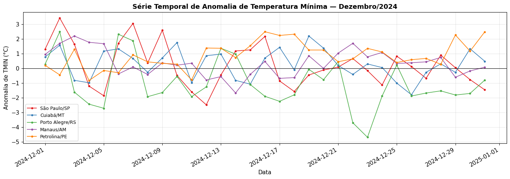
Figura 19 - Série diária de anomalia de Tmin em cinco capitais — dezembro/2024.
Observado × climatologia num ponto
A figura mais útil para apresentar a magnitude de uma onda de calor ou frio:
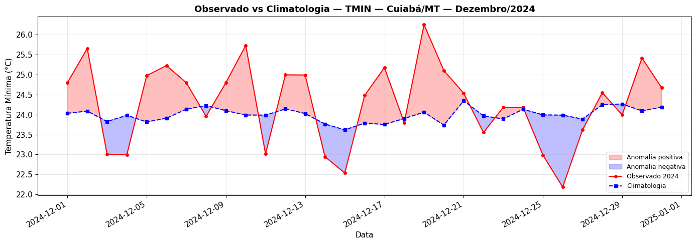
Figura 20 - Curva observada e climatológica de Tmin em Cuiabá/MT, com anomalias positivas e negativas destacadas.
Precipitação acumulada progressiva
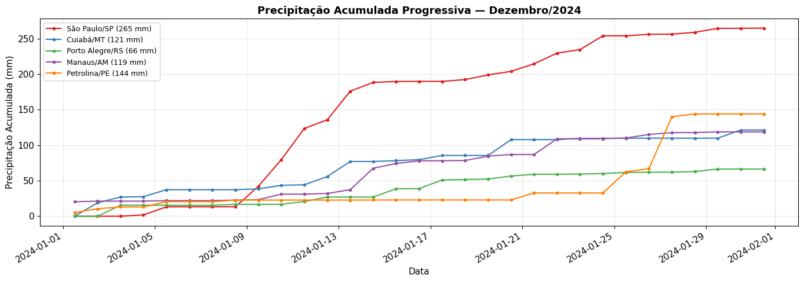
Figura 21 - Precipitação acumulada progressiva em janeiro/2024 (MERGE), comparando cinco pontos.
Anomalia acumulada progressiva
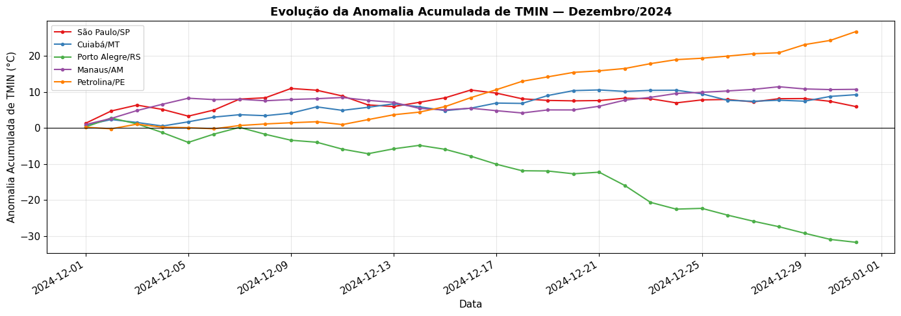
Figura 22 - Anomalia acumulada progressiva de Tmin nas cinco capitais.
8. análises complementares
Mapa com pontos de extração sobrepostos:
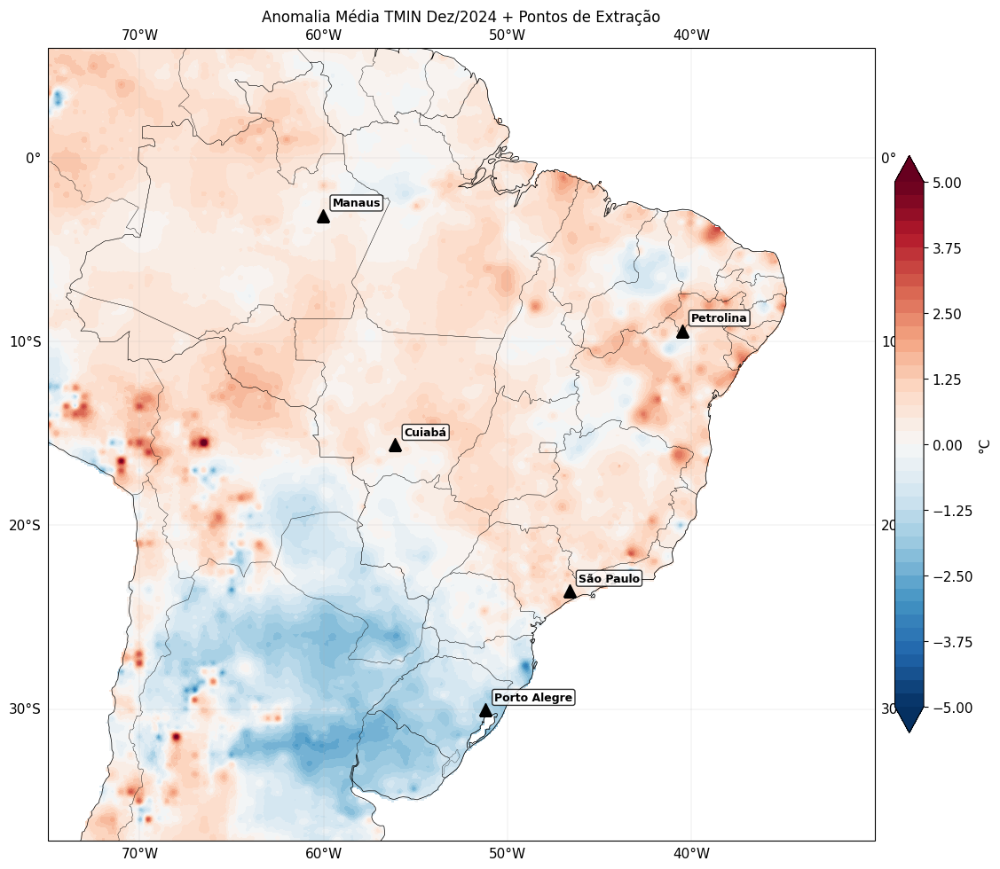
Figura 23 - Pontos de extração sobrepostos ao mapa de anomalia média de Tmin.
Histogramas da distribuição espacial das anomalias:
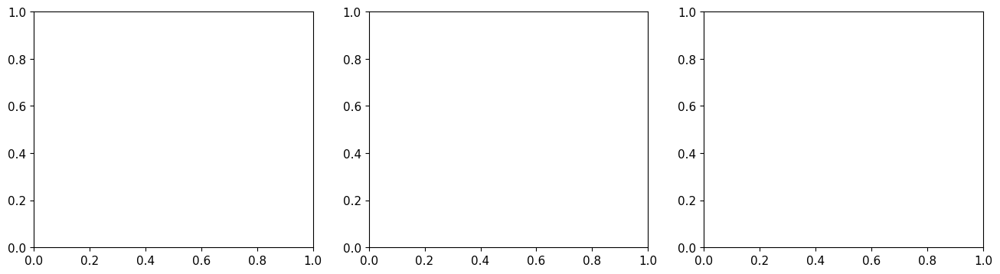
Figura 24 - Distribuição espacial das anomalias de PREC, Tmin e Tmax em 15/01/2024.
Discussão
O fluxo desta aula é o plano B quando o método baseado em estação INMET da Aula prática 2 — Sicor + INMET: plausibilidade espacial e GDD da soja não é viável — seja porque a estação mais próxima está a > 50 km, seja porque está com falhas no período crítico. Vantagens da grade:
cobertura espacial completa (sem buracos);
climatologia de longo prazo já calibrada;
anomalias prontas para integrar a dashboards.
Limitações:
MERGE tem resolução de 0,1° (~11 km), SAMeT tem 0,05° (~5 km) — insuficientes para microescala (geadas em fundos de vale, granizo);
artefatos de calibração quando há poucas estações no entorno;
a climatologia “média” mascara extremos historicamente conhecidos.
Próximos passos
Aula prática 4c — dados do satélite GOES-19 (ABI, GLM e LST) — quando precisamos de resolução temporal sub-diária ou observação direta de nuvens.
Aula 1 — plausibilidade meteorológica: seca em soja — uso integrado de estação INMET + grade MERGE para verificar plausibilidade de uma COP de seca em soja.